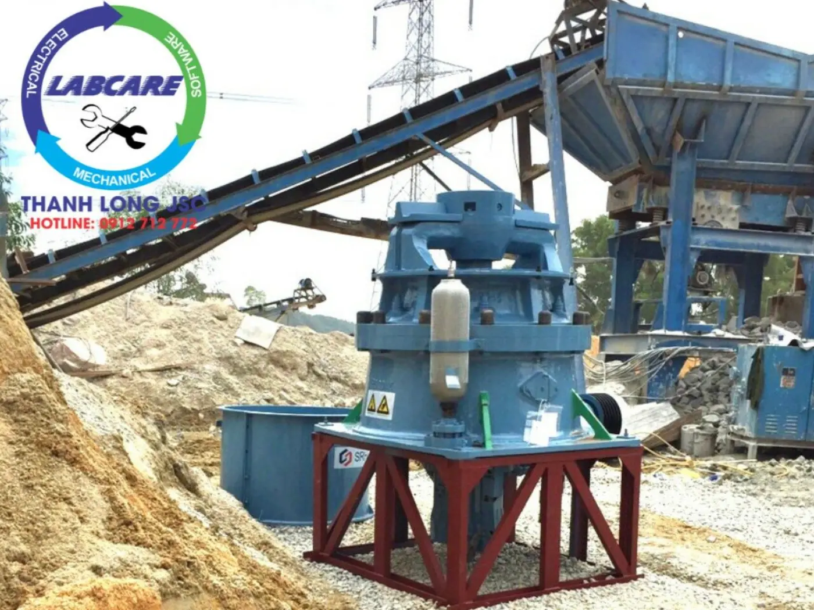

Thanh Long JSC · Công nghệ nghiền Thụy Điển
Máy nghiền đá & dây chuyền cát nhân tạo
Thanh Long JSC cung cấp, lắp đặt và bảo trì máy nghiền đá, máy làm cát nhân tạo, máy rửa cát và dây chuyền nghiền đồng bộ công suất 50–2.000 tấn/giờ cho mỏ granite, bazan, đá vôi, sỏi sông. Cấu hình tính theo đúng công suất mỏ, tối ưu điện năng và vật tư tiêu hao.
0tấn/giờ
Dải công suất dây chuyền, từ mỏ nhỏ đến trạm quy mô công nghiệp
0%
Tỷ lệ cát của máy VSI Thanh Long, điều chỉnh được tỷ lệ đá vo / cát
0tỷ ₫/năm
Chênh lệch tiền điện và vật tư so với máy VSI thông thường
0mm
Cỡ hạt cát mịn nhỏ nhất máy tách cát thu hồi lại từ nước thải
Dòng máy
Chọn máy theo
công đoạn sản xuất
Mỗi dòng máy có trang riêng với thông số, ảnh thực tế và nút báo giá. Chưa rõ cần máy gì, hãy mô tả mỏ của bạn ở form báo giá, kỹ sư sẽ đề xuất cấu hình.



Dây chuyền
Cát nhân tạo từ sỏi sông
Cấu hình trọn gói từ cấp liệu, nghiền, vo đá đến rửa và thu hồi cát mịn, dùng cho mỏ sỏi cuội lòng sông.
- Sỏi sông
- Cát xây


Phân loại
Sàng rung phân loại
Tách sản phẩm theo cỡ 0–5, 5–10, 10–20, 20–40 mm hoặc cấp phối Dmax 37,5 theo yêu cầu dự án.
- Đa tầng
- Cấp phối


Trọn gói
Dây chuyền đồng bộ
Thiết kế, cung cấp và lắp đặt toàn bộ trạm từ 50 đến 2.000 tấn/giờ, hoặc nâng cấp trạm đang chạy.
- 50–2.000 t/h
- Nâng cấp
Đá GraniteĐá BazanĐá VôiĐá RyolitSỏi sôngĐá cát kếtBê tông tái chếGạch đá thải
Dây chuyền
Từ đá hộc đến
cát sạch, 6 công đoạn
Bấm từng công đoạn để xem máy đảm nhiệm và sản phẩm ra. Không phải mỏ nào cũng cần đủ 6 bước, cấu hình được cắt theo đầu ra bạn bán.
Công đoạn 01 · Máy kẹp hàm
Bẻ đá hộc thành cỡ nghiền được
Đá sau nổ mìn được cấp liệu rung đưa vào máy kẹp hàm. Đây là máy chịu tải nặng nhất của trạm nên chọn đúng cỡ miệng nạp quyết định công suất cả dây chuyền.
- Ra
- Đá cỡ lớn, chuyển sang nghiền trung
Chi phí vận hành
Máy rẻ lúc mua
chưa chắc rẻ lúc chạy
So sánh máy làm cát VSI Thanh Long với một máy VSI thông thường. Đầu tư ban đầu cao hơn khoảng 981 triệu đồng, nhưng phần chênh lệch tiền điện và vật tư mỗi năm khoảng 1,73 tỷ đồng, tức hoàn vốn chênh lệch sau chừng 7 tháng.
Tiết kiệm tiền điện / tháng165,8 triệu ₫
Mỗi năm1,99 tỷ ₫
Tính theo tiền điện 8.000 ₫/m³ (VSI thông thường) và 3.750 ₫/m³ (VSI Thanh Long), chưa gồm vật tư tiêu hao.
| Thông số | VSI khác | VSI Thanh Long |
|---|---|---|
| Tốc độ rôto (vòng/phút) | 900–1.470 | 1.500–2.500 |
| Công suất động cơ | 264–320 kW | 110–150 kW |
| Sản lượng / tháng | 33.800 m³ | 39.000 m³ |
| Tiền điện / m³ | 8.000 ₫ | 3.750 ₫ |
| Tiền điện / năm | 3,24 tỷ ₫ | 1,76 tỷ ₫ |
| Vật tư tiêu hao / năm | 2,84 tỷ ₫ | 2,60 tỷ ₫ |
| Đầu tư ban đầu | 1,70 tỷ ₫ | 2,68 tỷ ₫ |
| Chênh lệch chi phí / năm | Tiết kiệm 1,73 tỷ ₫ | |
Nguồn: số liệu vận hành Thanh Long JSC công bố trên trang sản phẩm máy làm cát nhân tạo.
Dự án
Máy đang chạy ở đâu
Dây chuyền nghiền đá
Dây chuyền 300 tấn/giờ cho mỏ đá xây dựng
 Trạm di động · Campuchia
Trạm di động · Campuchia
Trạm nghiền di động cho công trình hạ tầng
Cát nhân tạo
Dây chuyền nghiền cát từ sỏi sông
 Đá cát kết
Đá cát kết
Sản xuất cát xây dựng từ đá cát kết
Thu hồi cát mịn
Thu hồi cát mịn từ nước rửa cát
Dịch vụ
Bảo trì định kỳ máy kẹp hàm SJC
Tôi đã làm việc với Thanh Long 6 năm. Chất lượng máy tốt, bảo hành chu đáo, vấn đề nào phát sinh cũng được giải quyết thấu tình đạt lý.
Muốn tối ưu chi phí sản xuất, tiết kiệm điện và không phải dừng máy thì máy nghiền đá Thanh Long là lựa chọn số một khi đầu tư trạm nghiền.
Máy nghiền cát của Thanh Long làm chúng tôi thực sự thán phục, nhất là mức tiêu hao vật tư dao cát và điện năng.
01 / 03
Về Thanh Long
Một đầu mối,
từ khảo sát đến bảo trì
Thanh Long cung cấp thiết bị và giải pháp khai thác đá từ 50 đến 2.000 tấn/giờ, cùng giải pháp cát nhân tạo trọn gói. Khách hàng gồm doanh nghiệp tư nhân và dự án nhà nước. Đội kỹ sư trực tiếp khảo sát mỏ, đề xuất cấu hình, lắp đặt, chạy thử và theo trạm suốt vòng đời máy.
- Khảo sát mỏ, đề xuất cấu hình theo đá và sản phẩm đầu ra
- Lắp đặt, chạy thử, đào tạo đội vận hành
- Trung tâm bảo hành riêng, phụ tùng và bảo trì định kỳ
- Nâng cấp trạm cũ để giảm điện năng và vật tư
- Pháp nhân
- Công ty Cổ phần Thiết bị và Dịch vụ Kỹ thuật Thanh Long
- Website
- thegioimaynghienda.com (khác với thegioimaynghien.vn)
Tư vấn kỹ thuật
Bài viết mới

Tái chế bê tông, gạch đá thải từ công trường: xu hướng tất yếu của ngành xây dựng
Phá dỡ và cải tạo công trình tạo ra lượng lớn phế thải mỗi năm. Nghiền tái chế biến chúng thành vật liệu dùng lại được.
Máy nghiền di động vật liệu xây dựng tại khu công nghiệp

Giải pháp tái chế vật liệu hiệu quả, tiết kiệm chi phí
Dây chuyền nghiền đá cát kết sản xuất cát xây dựng
Giá phụ thuộc công suất, loại đá và sản phẩm đầu ra. Một trạm 100 tấn/giờ nghiền đá vôi ra đá 1x2 khác hẳn trạm 300 tấn/giờ nghiền bazan ra cát. Gửi ba thông số này qua form báo giá, kỹ sư sẽ đề xuất cấu hình và báo giá chi tiết.
Đá cứng, độ mài mòn cao như granite, bazan thường hợp máy côn vì chi phí vật tư thấp hơn. Đá vôi và vật liệu tái chế hợp máy phản kích vì cho hạt dạng khối đẹp. Kỹ sư sẽ chọn sau khi biết loại đá và sản phẩm bạn bán.
Có. Cát nghiền từ máy VSI cho hạt dạng khối. Sau khi rửa và tách cát mịn đúng quy trình, mô-đun độ lớn được kiểm soát để dùng cho bê tông và vữa xây.
Được. Thường là thay máy nghiền thứ cấp, thêm máy làm cát hoặc máy tách cát mịn để tăng sản lượng và giảm điện mà không phải làm lại toàn bộ trạm.
Có. Thanh Long khảo sát mỏ, lắp đặt, chạy thử, đào tạo vận hành và bảo hành, bảo trì tại trung tâm bảo hành trạm nghiền ở phường Long Hương, TP.HCM.
Báo giá
Mô tả mỏ của bạn,
nhận cấu hình và giá
Ba bước, khoảng một phút. Kỹ sư Thanh Long sẽ gọi lại để xác nhận thông số trước khi gửi báo giá.
Cần gấp? Gọi ngay0912 712 772